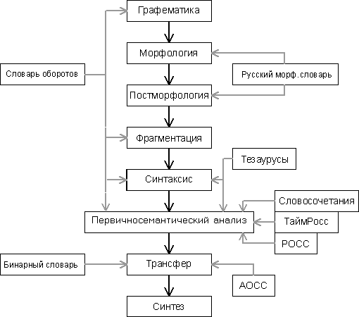

|
Наши технологии базируются на многоуровневом представлении естестевенного языка, которое, в свою очередь, было заимствовано у системы ФРАП (Система французско-русского автоматического перевода была разработана коллективом лаборатории машинного перевода Всесоюзного центра переводов совместно с коллективом лаборатории машинного перевода МГПИИЯ им М. Тореза. 1976-1986 ГГ.)
Компоненты, составляющие языковую модель, - лингвистические процессоры, которые друг за другом обрабатывают входной текст. Вход одного процессора является выходом другого. Выделяются следующие компоненты:
- Графематический анализ. Выделение слов, цифровых комплексов, формул и т.д. (подробнее)
- Морфологический анализ. Построение морфологической интерпретации слов входного текста.(подробнее)
- Синтаксический анализ. Построение дерева зависимостей всего предложения.(подробнее)
- Семантический анализ. Построение семантического графа текста.(подробнее)
Для каждого уровня разрабатывался свой язык представления. Язык представления, как полагается, состоит из констант и правила их комбинирования. На графематическом уровне константами были графематические дескрипторы (ЛЕ – лексема, ЦК – цифровой комплекс и т.д.) На морфологическом уровне – граммемы (рд – родительный падеж, мн -множественное число). На синтаксическом – названия отношений и групп (ПОДЛ – отношение между подлежащим и сказуемым, ПГ - предложная группа). На семантическом – семантические категории и отношения.
С каждого уровня представления можно сделать переход к такому же представлению на другом естественном языке (трансфер), что позволяет осуществлять перевод, даже если "глубокий" (семантический) анализатор не смог обработать текст. Основой для построения уровней служили результаты работы предыдущих этапов, но, что важно, последующие анализаторы также могли улучшить представление предыдущих. Например, для какого-то предложения синтаксический анализатор не смог построить полного дерева зависимостей, тогда, возможно, семантический анализатор сможет спроектировать им построенный семантический граф на синтаксис.
Таким образом, текст обрабатывается по следующей технологии:
|

|
| (Для получения дополнительной информации, кликните на интересующем блоке схемы.) |
С некоторыми особенностями проекта можно ознакомиться в следующих работах:
1. Диссертация А.Сокирко "Семантические словари в автоматической обработке текста (по материалам системы ДИАЛИНГ)":
2. Alexey Sokirko. 2001 A short description of Dialing Project.
3. Алексей Сокирко. 2003. DDC - программа поиска по морфологически и cинтаксически размеченному массиву.
4. Alexey Sokirko. 2003 A technical overview of DWDS/Dialing Concordance .
5. Алексей Сокирко. 2004 Морфологические модули на сайте www.aot.ru .
6. Диссертация Игоря Ножова(nozhov@yandex.ru) "Морфологическая и синтаксическая обработка текста(модели и программы)", 2003 год :
7. Алексей Сокирко и Светлана Толдова. 2005 Сравнение эффективности двух методик снятия лексической и морфологической неоднозначности для русского языка (скрытая модель Маркова и синтаксический анализатор именных групп)
о нас продукты скачать технологии демо поиск ^ |